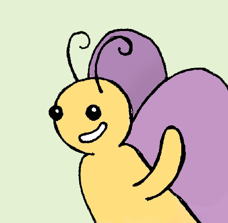

¡Hola! Las imágnes que estas viendo estan inspiradas en el album musical Brotecitos y las podes encontrar en mi Behance. Quedate y te cuento un poco sobre mi y mis estudios.
Nací y viví hasta mis 18 años en Paraná, Entre Ríos con mis papas y hermanos. Desde chiquita quise ser artesana, me escondía en el taller de papá y me gustaba usar sus herramientas. Siempre me gusto poner cosas al fuego para moldearlas o ver sus reacciones, el contacto con lo material me era imprescindible.
A los 9 años mis papas me regalaron mi pimera máquina de coser. Empecé haciendome disfraces y hoy gran parte de mi armario es producida por mi. La cercanía con los procesos productivos y organizativos me llevó a participar de una amplia gama de propuestas que terminaron por posibilitarme el acceso a una beca merito que cubre mis estudios en la Universidad Torcuato Di Tella.
En 2022 me vine a vivir a Buenos Aires y desde entonces todo es parte de la locura mas grande que jamás me hubiera soñado. Me gustaría avisarle a mi abuela que prender fuego su cocina valió la pena, todos esos experimentos me permitieron estar acá.
Actualmente, estoy cursando mi tercer año de la LED (Lisenciatura en Diseño) y frecuentemente me olvido como era cursar en un aula donde las sillas miraban al frente. El formato taller es un estilo de vida. La mayoría de mis proyectos son inconsevibles sin la mirada y cuestionamiento de mis compañeros y profesores.
Me cuesta entender la integralidad despegada del taller. Hemos desarrollado una plasticidad para desplazarnos de medios digitales a analógicos que la linea que los divide es casi imperseptible.
A la par de la LED curso el Seminario de Catequesis del IPA (Instituto Pastoral de la Adolescencia) en el Colegio La Salle. Allí aprendo sobre metodologías que se complementan con las de la LED, sobre todo por el foco en la otredad (lo que en diseño llamamos usuario) y las experiencias vitales (vinculadas intrinsecamente con las experiencias de usuario).
Espero que todo lo aprendido y por aprender de la Universidad pueda ponerlo en practica al servicio de otros, de usuarios, cuyas circunstancias precisen ser problematizadas y poder ofrecer respuestas ingeniosas e innovadoras acorde a los tiempos que corren.